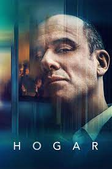
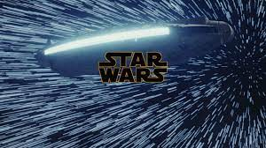

| Titulo | Genero | Sinopsis | Foto | Enlace |
| Hogar | Drama | un ex-ejecutivo publicitario que, en su día, se hizo rico haciendo anuncios de utensilios de cocina bajo el eslogan "La vida que te mereces". A día de hoy, sin embargo, su realidad es otra: |
 | Hogar |
| La Bella y la Bestia |
|
historia de Bella (Emma Watson), una joven brillante y enérgica, que sueña con aventuras y un mundo que se extiende más allá de los confines de su pueblo en Francia. |
Bella y Bestia | |
| Stars Wars Episode VI: Return of the Jedi | Space opera | Luke Skywalker ha regresado a Tatooine, su planeta de origen, para intentar rescatar a su amigo Han Solo de las garras del malvado Jabba, el Hutt. |  | Star Wars |